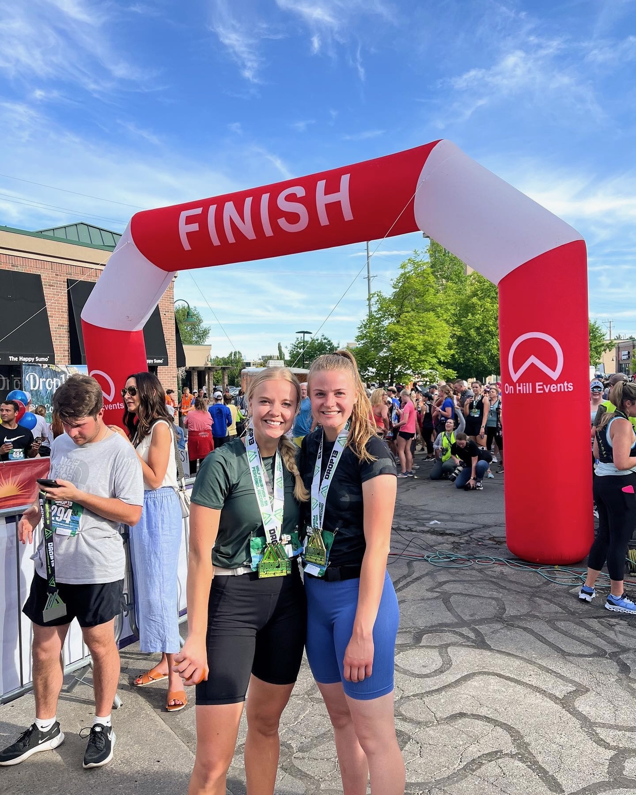

Oh hey there!
My name is Katie Martin & I'm so glad you're here! I am 21 years old and from a small town in Central Washington called Cashmere. Right now I am attending school in Provo, Utah at Brigham Young University. Here's a little bit about myself through photos.

This is my cute family!

BYU is the best and I love learning! I'll begin the Marketing program within the Marriott School of Business this Fall.
I love to play sports, run and do pretty much anything active!
Hiking and backpacking in the mountains are my favorite things to do.

I served a mission for The Church of Jesus Christ of Latter-day Saints in Orem, Utah & Florianópolis, Brasil. Seriously the best decision I've ever made!
Back to top